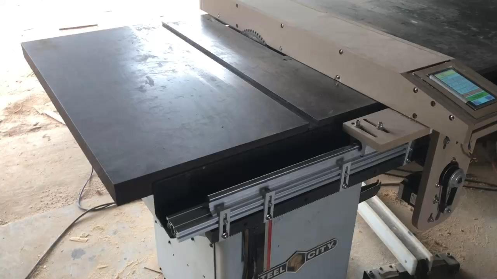
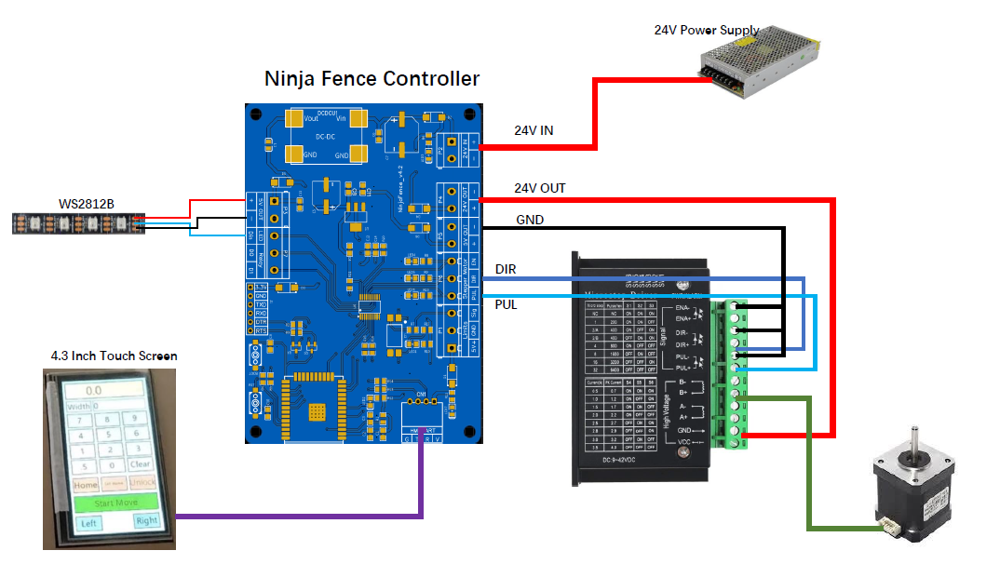
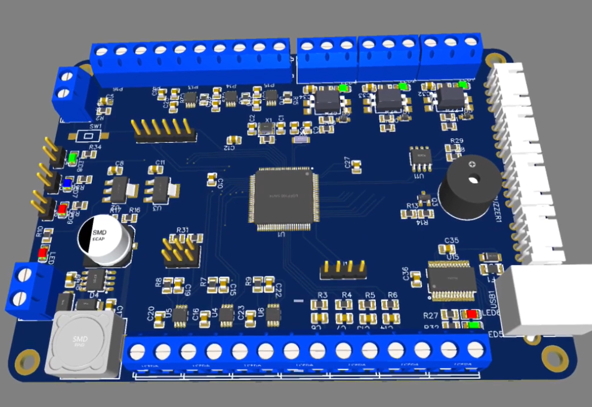
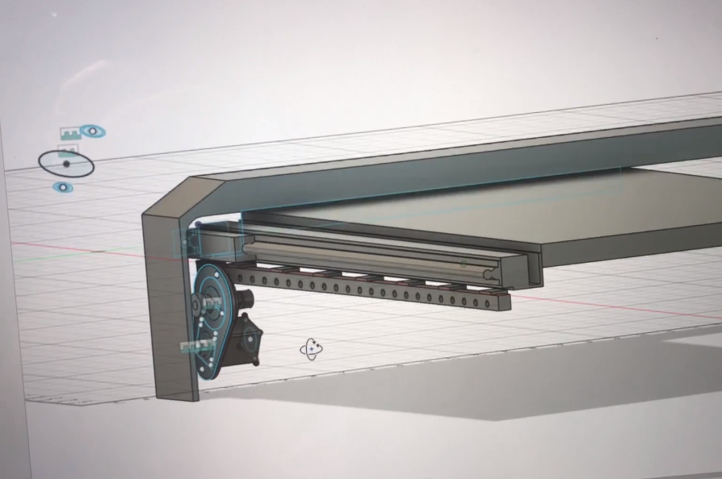
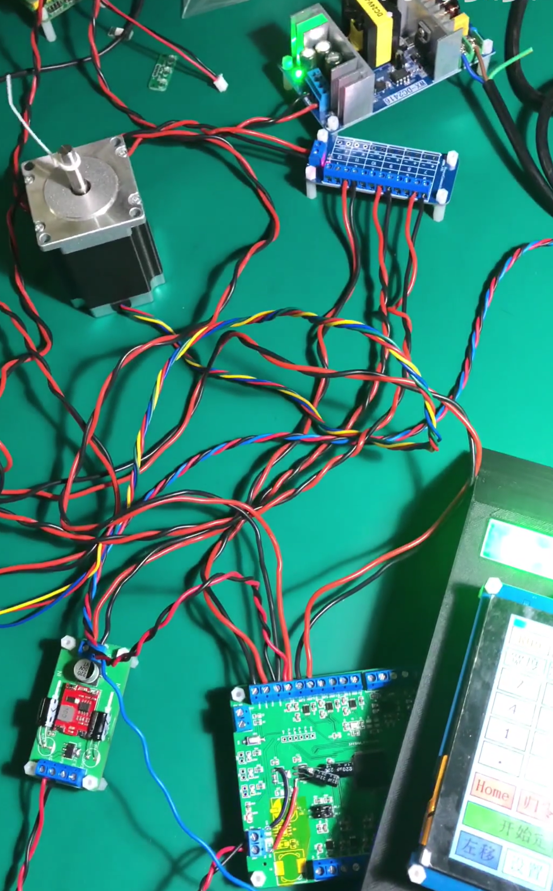
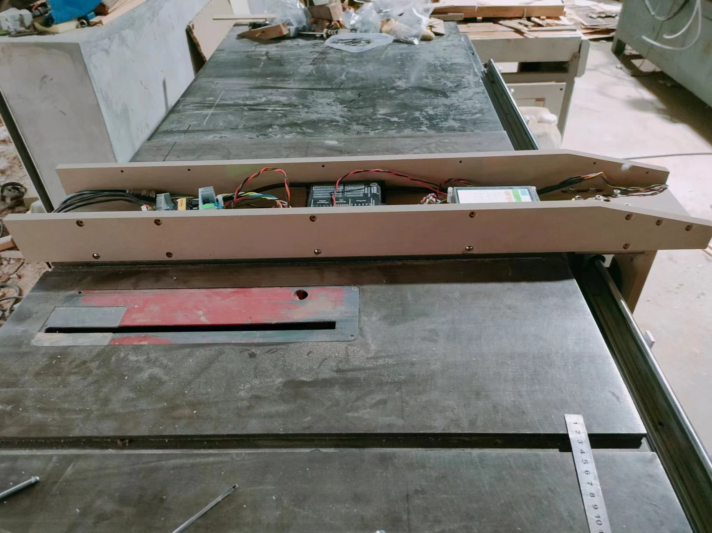

NinjaFence Motion G1 Overview
NinjaFence-Motion-G1 is a low-cost, automated table saw fence controller for woodworking enthusiasts. Enter a target position and the controller drives a stepper-based mechanism to move the fence, reducing repetitive manual adjustment.

Features
- Single stepper motor control
- Hardware and software movement limits
- 0.1 mm Jog+ and Jog− adjustment
- WS2812 status LED support
- Fence calibration through the built-in web interface
- Firmware updates over the air (OTA)
- 4.3-inch touchscreen interface
Known limitation: automatic homing is not implemented on G1. Establish and verify the fence position manually before use.
Hardware interface
| Interface | Description |
|---|---|
| 24V IN | Controller power input; accepts 12–28 V DC. |
| 24V OUT | Power output for the external stepper motor driver. |
| 5V OUT | Power output for external 5 V devices. |
| EN | Stepper driver enable output; not currently used by the G1 firmware. |
| DIR | Stepper driver direction output. |
| PUL | Stepper driver pulse output. |
| Sig | Limit input. A HIGH level stops fence movement. |
| Din | WS2812 data output; supports up to four LEDs. |
| D0 | Digital output 0; HIGH while NinjaFence is moving. |
| D1 | Digital output 1; LOW while NinjaFence is moving. |
| HMI UART | Connection for the 4.3-inch touchscreen. V is +5 V and G is ground. |
Wiring
Connect the controller, external stepper driver, limit input, status LEDs, and touchscreen as shown below. Confirm polarity and signal labels before applying power.


Next steps
Calibrate movementCalculate the correct stepper pulse value for your mechanism.
Use the interfacesLearn the touchscreen, web configuration, LED states, and OTA workflow.
Development history
NinjaFence development began in 2018 and progressed through multiple hardware, software, enclosure, and mechanical revisions. The project focused on making the controller practical, affordable, and straightforward to install.




